Create Group Policy Objects (GPOs)
Group Policy Objects (GPOs) are a powerful feature in Active Directory that allow administrators to centrally manage and configure operating systems, applications, and user settings in an Active Directory environment.
GPO Creation
Define the settings and configurations for the new Group Policy Object.
Using the NETLOGON Shared Folder
Instead of creating a custom shared directory, the built-in NETLOGON shared folder was used. This folder is automatically created when Active Directory Domain Services (AD DS) is installed and is commonly used in enterprise environments to store logon scripts and deployment resources.
- Accessed the shared folder via: \\GY01.LAB.local\NETLOGON
- Verified that the folder is replicated and accessible across the domain
- Confirmed default permissions allow authenticated users to read contents
The NETLOGON share provides a reliable and centralized location for distributing scripts and files to domain users without requiring additional configuration.
Preparing Image for GPO Deployment
An image file was placed inside the NETLOGON shared folder to simulate how organizations deploy standardized desktop environments. This image is used to configure a desktop wallpaper policy for users within a specific Organizational Unit (OU).
- Selected a background image for deployment
- Saved the image inside: \\GY01.LAB.local\NETLOGON
- Verified that the image is accessible from client machines
Storing the image in the NETLOGON share ensures it is centrally available and can be accessed by all domain users during policy application.
Screenshot: Image Stored in NETLOGON Directory
Display of the NETLOGON shared folder on the Domain Controller (GY01.LAB.local), showing the image file that will be used for desktop wallpaper configuration via Group Policy.
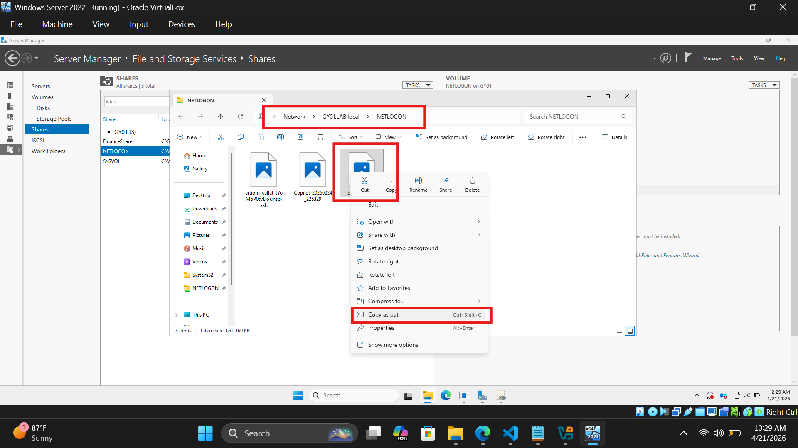
Configuring GPO to Set Desktop Wallpaper
A Group Policy Object (GPO) was configured to enforce a standardized desktop background for users within a specific Organizational Unit. This demonstrates how administrators maintain consistent user environments across an organization.
- Opened Group Policy Management in Management OU
- Created a new GPO: SetManagementBackground
- Navigated to:
User Configuration → Policies → Administrative Templates → Desktop → Desktop → Desktop Wallpaper - Enabled Desktop Wallpaper setting
- Set wallpaper path:
\\GY01.LAB.local\NETLOGON\download (2).jpg - Configured wallpaper style Center
This policy ensures that all users within the Management department receive a consistent desktop background upon login, reflecting real-world enterprise branding and system control practices.
Screenshot: Desktop Folder Showing Available Policies
The Desktop policy folder displaying available configuration options. The Desktop Wallpaper policy is highlighted as one of the key settings used to control user desktop environments.
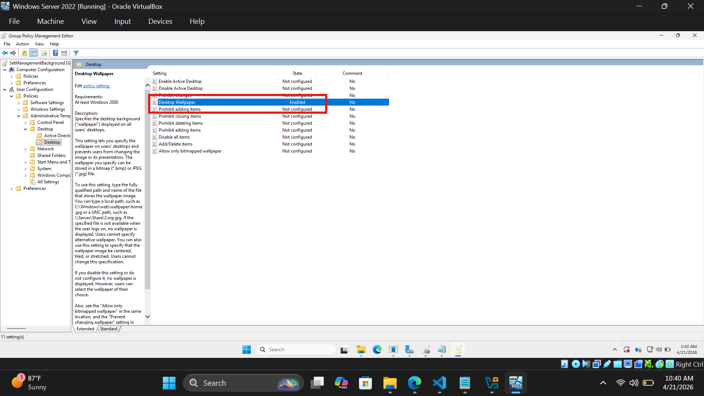
Screenshot: Configuring Desktop Wallpaper Policy
Configuration window for the Desktop Wallpaper policy, showing the specified network path (\\GY01.LAB.local\NETLOGON\download (2).jpg) and the selected wallpaper style. This enforces a standardized background for all users within the HR OU.
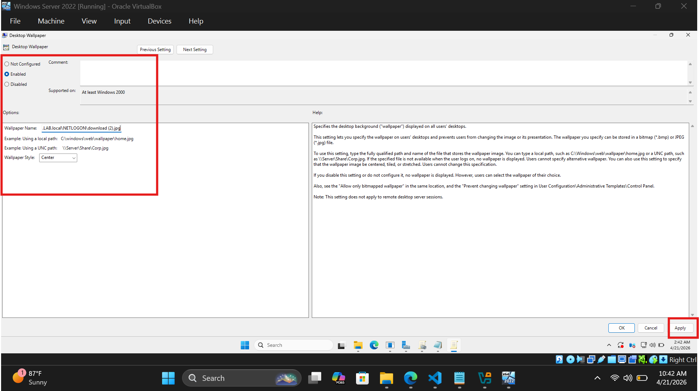
Testing the GPO Deployment
The policy was tested on the client machine to verify that the desktop wallpaper configured via Group Policy was successfully applied during user logon.
- Logged into the client machine using a domain account
- Ran gpupdate /force to apply policies
- Observed automatic update of desktop wallpaper
- Confirmed the policy applied successfully to the targeted OU
Screenshot: Wallpaper Applied on Client Machine
The client machine after Group Policy update, showing the enforced desktop wallpaper. This confirms that the GPO was successfully applied to the user account within the Management Organizational Unit.
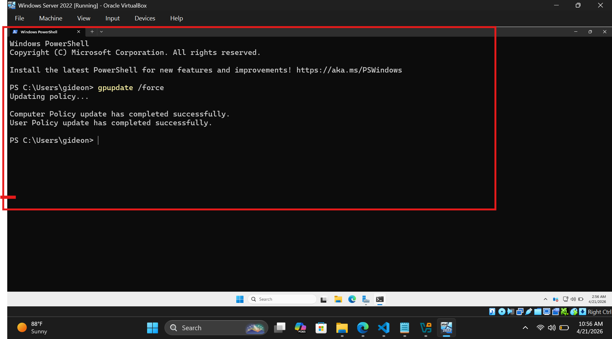
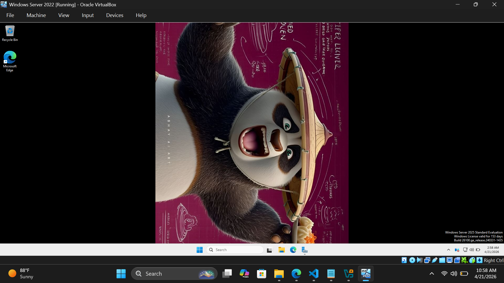
Troubleshoot Common Issues
Troubleshooting is a critical skill for IT Support Engineers, especially in an Active Directory environment where issues can arise from misconfigurations, network problems, or user errors. This section focuses on identifying and resolving common issues such as login failures, permission errors, and policy application problems. It emphasizes systematic problem-solving approaches, effective use of diagnostic tools, and best practices for maintaining a stable and secure Active Directory environment.
Troubleshoot Issues
Identify and resolve common issues in the Active Directory environment.
🎫 Ticket: “User Unable to Log In to Domain Account”
Issue Summary:
The user reported being unable to log into their workstation using their domain
credentials.
The system displayed an authentication error indicating incorrect credentials or account
restrictions.
Initial Assessment:
- Confirmed correct domain login format (username@domain.local)
- Checked for recent password changes or failed login attempts
- Verified workstation domain connectivity
Screenshot: Login Error on Client Machine
The client machine displayed an authentication error after multiple failed login attempts. This indicates either incorrect credentials or an account lockout condition in Active Directory.
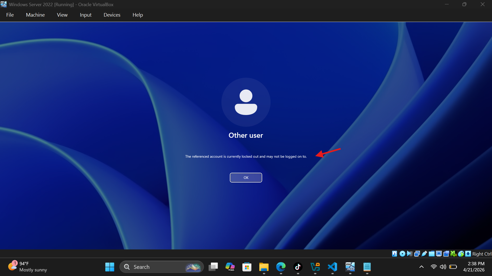
Troubleshooting Steps Performed:
- Opened Active Directory Users and Computers (ADUC) on the Domain Controller
- Located the affected user account in the correct Organizational Unit (OU)
- Checked account status and confirmed it was locked
- Verified account was enabled and not expired
Screenshot: Account Unlock and Password Reset
The administrator successfully unlocked the user account and reset the password from Active Directory Users and Computers.
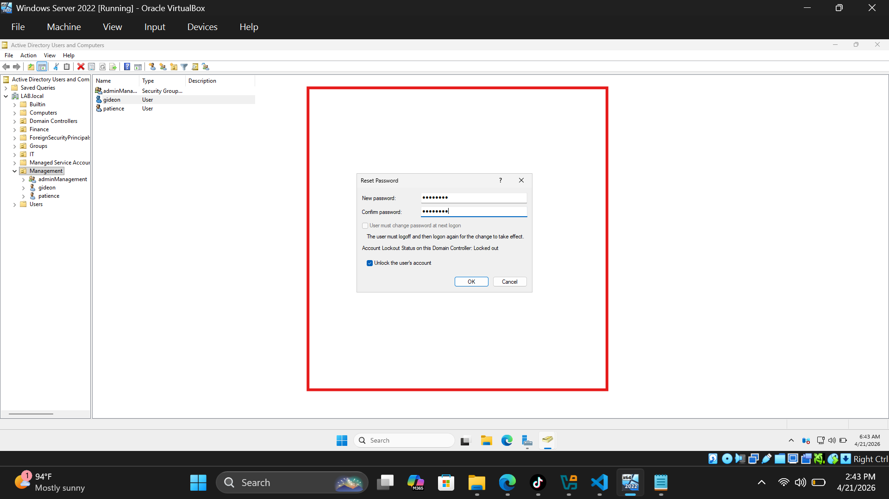
Root Cause:
The account was locked due to multiple incorrect password attempts, likely caused by
user error or cached credentials on a previously used device.
Resolution:
- Account unlocked in Active Directory
- Password reset successfully
- User instructed to log in and update password
- Login verified successfully on client workstation
Screenshot: Successful Login After Resolution
The user successfully logged into the domain account after the account was unlocked and password reset was completed.
Preventive Measures:
- Advised user to avoid repeated incorrect login attempts
- Recommended checking Caps Lock and keyboard layout settings
- Suggested clearing saved cached credentials on devices
🎫 Ticket: “User Unable to Access Shared Folder”
Issue Summary:
The user reported being unable to access a shared network folder. When attempting to
open the folder,
the system displayed an “Access Denied” error.
Initial Assessment:
- Confirmed the user was accessing the correct network path (e.g., \\GY01.LAB.local\AdminManagement)
- Verified the issue was reproducible on the user’s machine
- Checked if other users could access the same folder
Screenshot: Access Denied Error on Client Machine
The user attempted to open the shared folder but received an “Access Denied” message, indicating insufficient permissions.
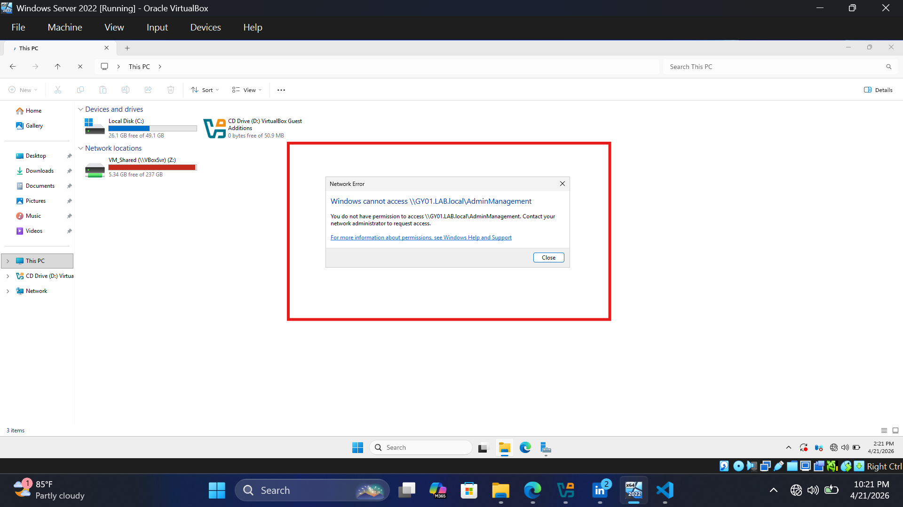
Troubleshooting Steps Performed:
- Logged into the file server hosting the shared folder
- Opened folder properties and reviewed Sharing Permissions
- Checked NTFS Security Permissions under the Security tab
- Verified that the user was not listed or assigned appropriate access
- Confirmed the user was not part of any group with existing permissions
Screenshot: Folder Security Permissions
The Security tab showing that the affected user or their group was not included in the permission list.
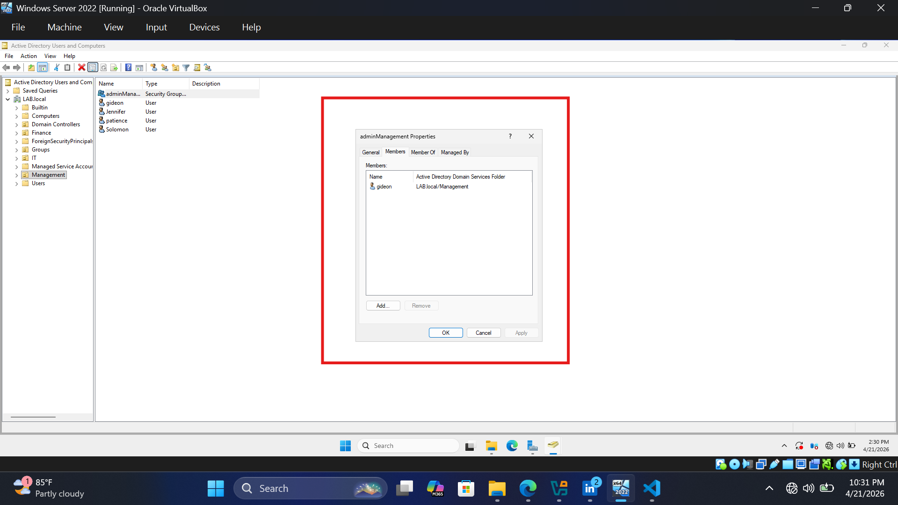
- Added the user to the appropriate security group (e.g., “AdminManagement Shared Folder Access”)
- Assigned required permissions (Read/Write as needed)
- Verified that both Share and NTFS permissions were correctly configured
Screenshot: Updated Permissions Configuration
The user was successfully added to the group permissions with appropriate access rights.
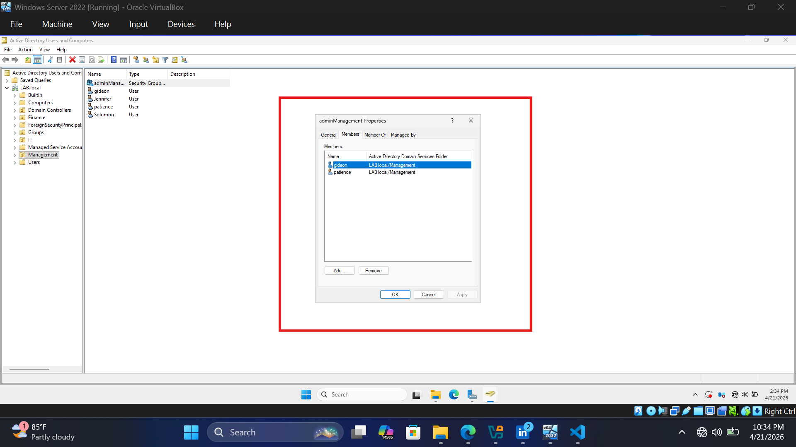
Root Cause:
The user did not have the required NTFS and/or Share permissions to access the network
folder.
Resolution:
- User was added to the appropriate security group
- Correct permissions were assigned to the group
- User logged out and back in to refresh group membership
- Access to the shared folder was successfully restored
Screenshot: Successful Access to Shared Folder
The user successfully accessed the shared folder after permissions were corrected.
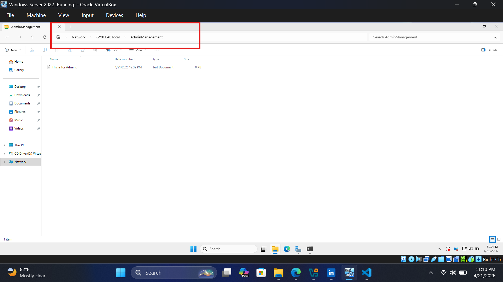
Preventive Measures:
- Use security groups instead of assigning permissions directly to users
- Regularly review access control lists (ACLs)
- Document folder access requirements for each department